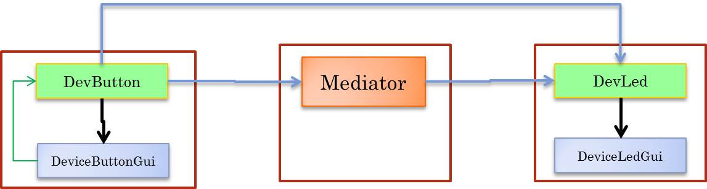

HIGH-LEVEL BLS projects on RaspberryPi

The following projects show how a high-level logic architecture can be used to build both a BLS in Java on
a single processing unit (a PC with 'virtual devices' or on a RaspberryPi with 'phisical devices')
and a distributed system in which each (virtual or phisical ) device is handled by a different processing unit.
Logic architecture: LOCAL

Logic architecture: DSITRIBUTED
The following design architecture puts the control on the Led site by motivating this choice with
a sort of 'control-locality' principle. But problem analysis should state that the Led is just an
actuator that requires
remote control. In this case the control could/should be allocated in the
Button node (or in some other node).

Project it.unibo.buttonLedSystemHL
| Package |
Entry |
Goal |
| it.unibo.buttonLedSystem |
BLSHLConfig |
Build a LOGIC BLS system by using the logical architecture defined at the end of the analysis (or project) phase |
Project it.unibo.buttonLedSystem.factory
| Package |
Entry |
Goal |
| it.unibo.buttonLedSystem.factory |
BLSFactory |
A factoy that depends on many technogy-dependent libraries in order to build different BLS (distributed) configurations. |
Project logical architecture: DSITRIBUTED
The following 'three-layers architecture' logically decouples the control from the Button and from the Led,
and des introduce some device (in green) to provide interavtion over a network:

Project architecture: Raspberry site
On a Raspberry node we can implement the entire Button-Led system by providing supports for a physical Button and
a physical Led by using the
Pi4j library. The point is to provide also a rspource (the
DeviceButtonServer) that allows the reception
of commands comimg form 'renmote buttons':

Project architecture: PC site
On a Raspberry node we must transform a command coming form a local button into a message to sent over the network to the
DeviceButtonServer on the Raspberry:

Project it.unibo.buttonLedSystem.raspberry
BLS all on Raspberry
| Package |
Entry |
Goal |
| it.unibo.bls.raspberry |
BLSRaspberryMain |
The BLS impemented in Java on the RaspberryPi. |
| it.unibo.buttonLedSystem.raspberry |
DeviceLedPi4j |
The Led impemented in Java on the RaspberryPi via Pi4j. |
| it.unibo.bls.raspberry |
DeviceButtonPi4J |
The Button impemented in Java on the RaspberryPi via Pi4j. |
A device on Raspberry
Project it.unibo.buttonLedSystem.arduino
A device on Arduino
| Package |
Entry |
Goal |
| it.unibo.buttonLedSystem.arduino |
blsPollingUno.ino |
The code on Arduino: a Led server and a Button proxy in functional style (no C++) |
| it.unibo.bls.buttonOnArduino |
BLSButtonOnArduinoMain |
BLS over RaspberryPi with the Button on Arduino |
| it.unibo.bls.ledOnArduino |
BLSLedOnArduinoMain |
BLS over RaspberryPi with the Led on Arduino |
VERY HIGH-LEVEL

The presence of a Mediator is a design choiche, since the Button can exchange messages with the Led directly.
The mediator could suggest the usage of a publish-subscribe protocol like MQTT.
A solution based on QActors
| Package |
Entry |
Goal |
| it.unibo.buttonLedSystem.qactor |
QActorButton |
The Button as a QActor |
| it.unibo.buttonLedSystem.qactor |
QActorLed |
The Led as a QActor |
| it.unibo.buttonLedSystem.qactor |
CtxOfButton |
The node of the Button |
| it.unibo.buttonLedSystem.qactor |
CtxOfLed |
The node of the Led |
| it.unibo.buttonLedSystem.qactor |
blsKb |
The bls system description |
A solution based on the custom metamodel qa
TO DO by the reader